Definition and properties
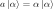
(Sudarshan 1963). Expanding in Fock states,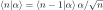
, so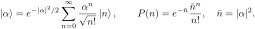
- Displacement:
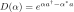
,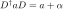
,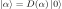
(Baker–Campbell–Hausdorff) (Glauber 1963). - Quadratures
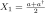
,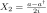
: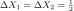
, the vacuum noise, minimum uncertainty. - Evolution under
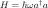
: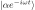
, stays coherent;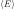
is a classical sinusoid. - Overcomplete:
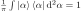
,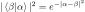
.
Why a classical current produces one
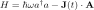
is linear in : the interaction-picture evolution is a displacement, so any classical antenna or a laser well above threshold radiates coherent states.
: the interaction-picture evolution is a displacement, so any classical antenna or a laser well above threshold radiates coherent states.
Worked example
1 mW at 1550 nm, 1 ns window:
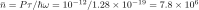
photons,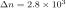
, relative fluctuation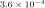
— the shot-noise limit of photodetection,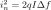
.Engineering applications
Coherent optical communications (QPSK/QAM constellations are coherent states  in phase space, with vacuum-noise-limited error rates), continuous-variable QKD, the standard quantum limit of interferometers.
in phase space, with vacuum-noise-limited error rates), continuous-variable QKD, the standard quantum limit of interferometers.
Pitfall
Coherent states with different are not orthogonal: their overlap is small only when
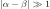
. Perfect discrimination of weak signals is impossible (Helstrom bound).